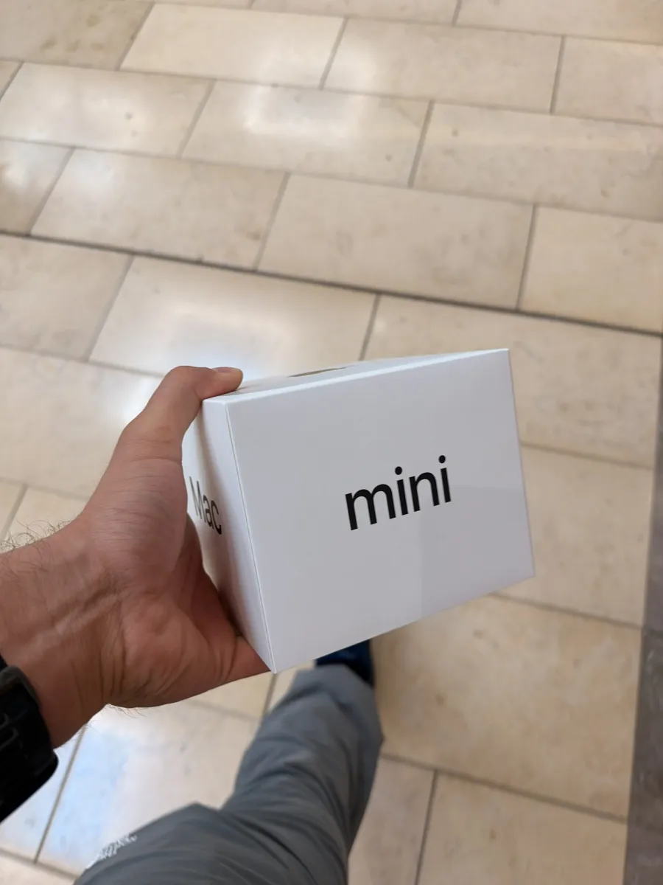

Blog
How Much RAM Do You Need to Run Local AI on a Mac?
Last updated
The short answer
You don’t need 128GB to do real work with local AI on a Mac. In my experience, 32GB is where local models stop being a toy and start being useful.
I keep seeing people online say 128GB is the “optimal” number for local models. I get why. More memory means bigger models. But I’ve bought and returned my way through four Macs running local AI: a 16GB Mac mini, a 24GB MacBook Air, a 32GB MacBook Pro, and now a 48GB Mac mini. The jumps between those tiers were bigger than any spec sheet would tell you.
This post walks through what each RAM tier actually gets you on Apple Silicon, based on what I’ve run myself and what the math says. If you’re about to spend money on a Mac for local AI, this is the post I wish I’d read first.
Why RAM is the whole game on Apple Silicon
On a Mac, the model has to fit in memory or it doesn’t run. Apple Silicon uses unified memory, so the CPU and GPU share one pool. That’s why Macs are good at local AI, and it’s also why the memory you pick at checkout is the ceiling forever. You can’t upgrade it later.
Three things eat that memory:
- The model weights. A rough rule: at 4-bit quantization (the common Q4 setting), a model needs a bit over half a gigabyte per billion parameters. An 8B model is about 5GB. A 32B model is about 19–20GB. A 70B model at Q4_K_M is about 42.5GB (source).
- The context window. Every token the model is holding in its head (your prompt, files it read, tool results, its own replies) takes memory too. Long context on a big model can cost several more gigabytes.
- macOS and your other apps. The system reserves a chunk of unified memory, so the GPU can only use part of it. On smaller Macs that’s roughly two-thirds; on bigger ones closer to three-quarters (approximate, and it can be adjusted).
So a model that “fits” on paper can still leave you with almost no room for context. That’s exactly what happened to me on 16GB.
My 16GB Mac mini: it could chat, and that’s about it
My first local AI setup was a 16GB M4 Mac mini. I loaded a small model, one of the largest it could realistically handle, and got it running.

It worked, technically. It could go back and forth with me for a couple of messages. But the context window was tiny. Anything longer than a short conversation and it started losing the thread.
The real dealbreaker was tool use. I wanted the model to actually do things: read files, run commands, act like an agent. On 16GB, tool use didn’t work even slightly. The model was too small to follow tool instructions reliably, and there wasn’t enough memory left over for the context those tools need.
If all you want is a private chatbot for quick questions, 16GB can do that. If you want an assistant that works on your files, it can’t.
Even as a chatbot, there’s a catch. A 7–8B model is less capable to begin with, and with so little room for context it loses track fast. Beyond simple back-and-forth, the answers get inconsistent and unreliable.
What I did find is that a small model can handle more complex tasks when it’s built into code or an application, instead of being used as an open-ended assistant. The program does the heavy lifting: it hands the model one small, well-defined job at a time and checks what comes back. That’s a real option for smaller Macs, but it’s much more technical, you have to know what you’re doing, and the results still vary. Still, if you’re stuck on 16GB, you’ll get more out of local AI by coding it into a program than by chatting with it.
Even so, I don’t recommend a 16GB Mac if you want to use local models seriously. Workarounds help, but they don’t change the ceiling.
My 24GB MacBook Air: I hit the wall on day one
Next I tried a 24GB M4 MacBook Air. I loaded a Qwen model, and I hit the RAM wall on the very first day.
24GB sounds like a solid upgrade over 16GB. But once the model loads, there’s very little room left for context, and agent work needs a lot of context. For what I wanted to do, it wasn’t enough.
My 32GB MacBook Pro: night and day
Then I moved to a 32GB M4 MacBook Pro. On paper that’s just double the memory. In practice it was night and day.
With 32GB I could run 32B models, and they could create, change and organize my folders with ease. I’d point the model at a directory and it would parse through it, usually pretty accurately. That’s the moment local AI went from a demo to something I actually use for work.
On 32GB I’ve run real automations: file management, PDF creation through a headless browser, and scheduled directory jobs. It handles them, but the browser shares the same memory as the model, so it’s tight.
It wasn’t perfect. Sometimes it hallucinated about what it had done. One test I ran: I asked it to make 100 documents, each about a different animal. It told me it was done. When I checked, 80 of the 100 files didn’t contain anything about the animal at all. It had written the instructions for the task into each file instead of doing the task.
It did fix it in the end once I pointed it out. But that taught me the most important rule for local agents: check the output, not the model’s summary of the output. A model saying “done” and the work being done are two different things.
Why such a big jump from 16GB to 32GB? A 32B model at 4-bit is roughly 20GB. On 16GB that’s impossible. On 32GB it fits, with a little room left for context and tools. Model size is what unlocks reliable tool use, and 32GB is the first tier where those mid-size models fit.
Where I landed: a 48GB Mac mini
Today I run a 48GB M4 Pro Mac mini. I picked it because it was a good deal: a model a year or two old, with a lot of memory for the price.
The surprise was that I didn’t need a bigger model. I ran the same Qwen 32B-class model I’d used on 32GB, and it got much better. Tool use became robust, and it could hold a lot more context: longer sessions, more files, more tool results, without falling apart.
The math explains it. A 32B model at 4-bit takes roughly 20GB just to load. On a 32GB Mac, macOS only lets the GPU use part of the memory, so after the model loads there’s very little left for context. On 48GB there’s roughly 15GB more headroom, and tool-heavy agent work eats context fast: every tool definition, file it reads, and result it gets back takes up space. Same model, much more room to work.
48GB also lets me load a 70B-class model, but I can’t use it with tools. The one I run is a mixture-of-experts model that takes about 28GB. macOS only lets the GPU use part of the 48GB, so once it loads there’s very little left for context, and tools need a lot of it. It runs, but it’s not an agent. For real work on 48GB, a 32B model with room to breathe beats a 70B-class model that barely fits.
That’s a strategy worth copying. For local AI, RAM matters more than having the newest chip. An older Mac with more memory will often beat a newer one with less. For most people, this is the setup I’d recommend for value. If you want to do serious work, 48GB and up is where local AI starts to feel professional-grade. My own next step is somewhere between 128GB and 256GB, and the reason is specific: I build local AI systems for other people, which means running several models at the same time and actually using that 70B-class model with tools, not just loading it. That’s exactly the kind of work those bigger tiers are for. If you’re one person running one agent, you probably don’t need it.
What I actually ran on each Mac
Here’s the short version of my own four machines, before the general breakdown.
| Mac | Model I ran | What happened |
|---|---|---|
| 16GB M4 Mac mini | Small model (around 7–8B) | Short chats only. Tiny context, tool use didn’t work. |
| 24GB M4 MacBook Air | A Qwen model | Hit the RAM wall on day one. Too little room for context. |
| 32GB M4 MacBook Pro | 32B models | Reliable file and folder tasks. Still needed checking (80 of 100 files wrong once). |
| 48GB M4 Pro Mac mini | Qwen 32B-class | Same model size as 32GB, but robust tool use and much longer context. |
What each RAM tier can run
Here’s how I’d break it down. Model sizes assume 4-bit quantization; the “good for” column mixes my own experience (16GB, 24GB, 32GB, 48GB) with the memory math for the tiers I haven’t owned.
| Unified memory | Largest comfortable model | Good for | Current Macs with this option (Oct 2026) |
|---|---|---|---|
| 16GB | 7–8B | Private chat, short Q&A. Small context, unreliable tool use. | Mac mini M6 (base), 14-inch MacBook Pro M5 (base) |
| 24GB | ~14B | Better chat, light coding help, simple tools with care. | Mac mini M6, 14-inch MacBook Pro M5, Mac mini M5 Pro (base), MacBook Pro M5 Pro (base) |
| 32GB | 27–32B | Real agent work: file and folder tasks, tool use, coding. | Mac mini M6 (max), 14-inch MacBook Pro M5 (max) |
| 48GB | 32B with long context | Same models as 32GB, with room for big documents and longer sessions. The sweet spot. | Mac mini M5 Pro, MacBook Pro M5 Pro, Mac Studio M5 Max |
| 64GB | 70B (tight) | Larger models, or 32B models plus other apps running. | Mac mini M5 Pro (max), MacBook Pro M5 Pro (max), Mac Studio M5 Max |
| 128GB | 70B with long context, large mixture-of-experts models | Running several models at once, very long context, bigger open models. | MacBook Pro M5 Max (max), Mac Studio M5 Max (max) |
| 256–512GB | The largest open-weight models | Research, serving a team, frontier-size models locally. | Mac Studio M5 Ultra |
For reference: the Mac mini M6 starts at 16GB and tops out at 32GB, and the M5 Pro Mac mini goes up to 64GB (sources list its in-between options slightly differently, so check Apple’s configurator). On the MacBook Pro, the 14-inch M5 comes with 16, 24 or 32GB, the M5 Pro tops out at 64GB, and only the M5 Max reaches 128GB. The Mac Studio M5 Max maxes out at 128GB and the M5 Ultra at 512GB; some Mac Studio delivery dates have slipped, so check current availability before you buy.
So is 128GB the magic number?
For most people, no. 128GB isn’t optimal, it’s comfortable. It lets you run 70B-class models with long context, or keep a couple of models loaded at once. That’s great if you need it.
But it’s also expensive. A Mac Studio M5 Max with 128GB was listed around $5,099 in early October. The Mac mini M6 maxes out at 32GB and starts at $899 before upgrades.
Here’s how I’d think about it:
- You want a private chatbot: 16–24GB is fine for low-context use.
- You want an agent that works on your files and runs tools: get at least 32GB. This is where I saw the biggest jump.
- You work with huge documents, long sessions, or want 70B models: 64GB.
- You’re running multiple agents, serving a team, or chasing the biggest open models: 128GB and up.
The jump from 16GB to 32GB changed what I could do. The jump from 32GB to 128GB mostly changes how big and how long. Spend accordingly.
What I’d tell anyone starting out
- Buy more RAM than you think. Memory is fixed at purchase. Storage you can add externally; RAM you can’t.
- Pick the biggest model that leaves room for context. A model that barely fits is worse than a slightly smaller one with breathing room, especially for tool use.
- Use 4-bit quantized models. They’re the practical default for running bigger models in less memory.
- Verify agent work. Open the files. Count them. Spot-check them. My 80-out-of-100 lesson is real.
- Close the heavy apps. Browsers and editors share the same memory pool as your model.
Bottom line
32GB is the minimum I’d recommend for local AI that does real work. 128GB is great, but it’s a luxury tier, not a requirement.
At Cloak Forge AI, I build private, local AI systems that run on hardware you own, with no cloud dependency. If you’re trying to figure out what Mac to buy or how to set up a local agent on the one you have, get in touch.
FAQ
Can a 16GB Mac run local AI?
Yes, small 7–8B models for chat. Expect short context and unreliable tool use.
Is 32GB enough for local LLMs?
For lighter work, yes. It runs 27–32B models that can handle file tasks and tool use, but there’s little memory left for long documents or other apps. If you can stretch your budget, I’d strongly recommend 48GB. It runs the same models with far more room to work.
Do I need 128GB to run local AI on a Mac?
No. 128GB helps with 70B+ models and very long context, but it’s not required for useful local AI.
Can I upgrade RAM on an Apple Silicon Mac later?
No. Unified memory is fixed when you buy the Mac.
The testing and experiences here are my own. I used AI to help organize and edit the writing, and I checked the facts against the sources below.